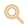

Muestra de aprobación · botón «Ver todo» en celular
Propuesta de lupa SVG de 32 × 32 px, con los tonos bronce y marfil de los botones flotantes existentes. Es una muestra separada; todavía no está integrada en el juego.

Propuesta de ícono · tocar devuelve el mapa al encuadre completo.